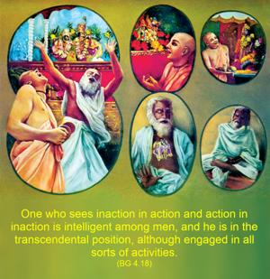
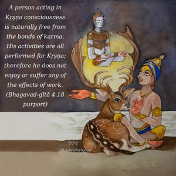

One who sees inaction in action and action in inaction is intelligent among men, and he is in the transcendental position, although engaged in all sorts of activities.


A person acting in Kṛṣṇa consciousness is naturally free from the bonds of karma. His activities are all performed for Kṛṣṇa; therefore he does not enjoy or suffer any of the effects of work. Consequently he is intelligent in human society, even though he is engaged in all sorts of activities for Kṛṣṇa. Akarma means without reaction to work. The impersonalist ceases fruitive activities out of fear, so that the resultant action may not be a stumbling block on the path of self-realization, but the personalist knows rightly his position as the eternal servitor of the Supreme Personality of Godhead. Therefore he engages himself in the activities of Kṛṣṇa consciousness. Because everything is done for Kṛṣṇa, he enjoys only transcendental happiness in the discharge of this service. Those who are engaged in this process are known to be without desire for personal sense gratification. The sense of eternal servitorship to Kṛṣṇa makes one immune to all sorts of reactionary elements of work.